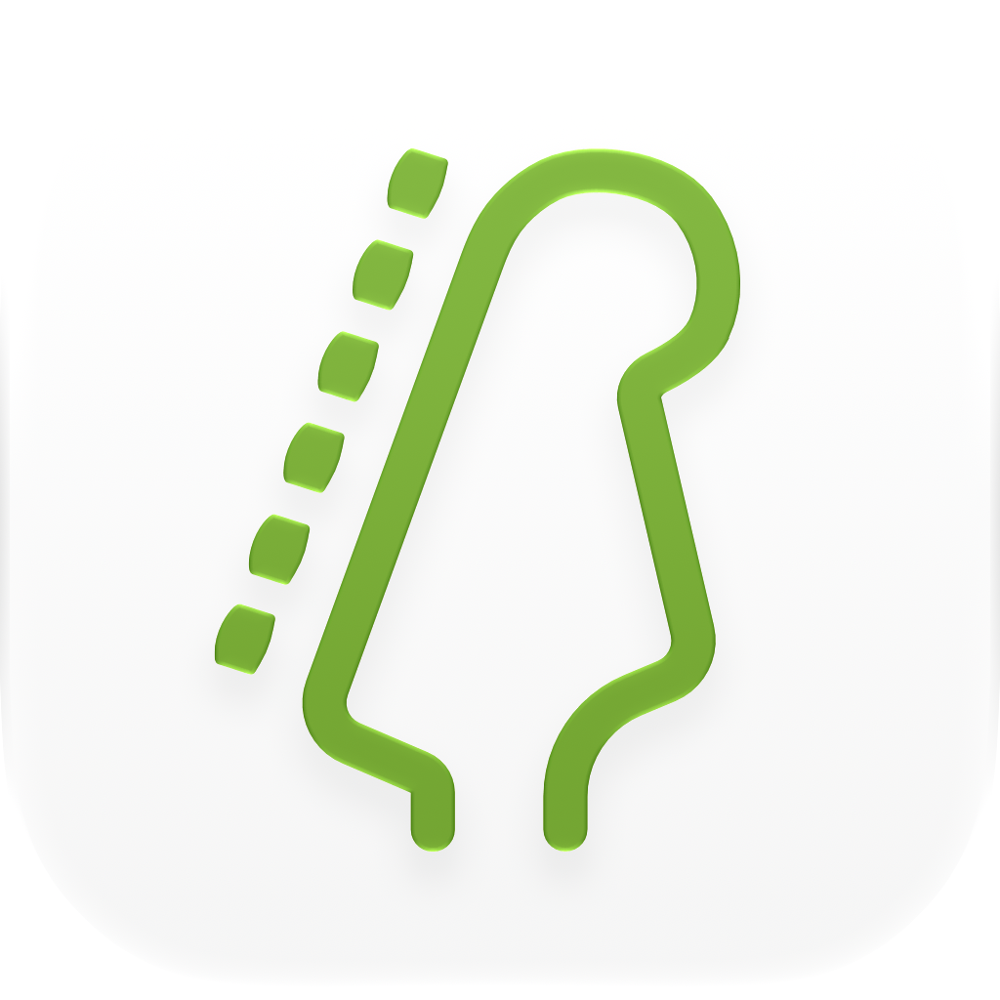

和聲系統
音階映射、調式變換、音程結構與替代調律探索。
Harmonic.Tools為macOS、iOS和iPadOS開發結構化音樂應用程式。
專注於清晰、速度與精準。
音階映射、調式變換、音程結構與替代調律探索。
基於模式的工作流程、和聲進行工具與結構化寫作工具。
快速查詢音程、調性、和弦-音階關係與和聲等價關係。
MIDI轉換、指板映射與和聲感知視覺化工具。
為快速、精確存取音樂結構而設計的工具。

指板音階與和弦。
識別您正在彈奏的內容，以CAGED和三音一弦指型呈現，取用20種調弦中可彈奏的和弦按法，並用內建節拍器反覆練習。

互動樂理實驗室。
探索65種音階，透過8種聲部排列構建和弦，並使用互動圓環映射和聲關係。

隨身時間與頻率工具組。
觸拍測速、BPM表、音符↔頻率、移調、FM與LFO計算器和32次泛音，製作人所需的每一個答案，離線即時可用。

指板音階與和弦。
識別您正在彈奏的內容，以CAGED和三音一弦指型呈現，取用20種調弦中可彈奏的和弦按法，並在您的Mac上用內建節拍器反覆練習。

互動樂理實驗室。
在Mac上探索65種音階，透過8種聲部排列構建和弦，並使用互動圓環映射和聲關係。

桌面時間與頻率工具組。
觸拍測速、BPM表、音符↔頻率、移調、FM與LFO計算器和32次泛音，製作人所需的一切答案，盡在Mac上。
音樂可以作為一個結構化系統來理解。
Harmonic.Tools構建的軟體能夠清晰、直接地呈現音樂關係。
Harmonic.Tools是一個長期運營的音樂軟體實驗室，專注於為Apple平台打造結構化的系統級工具。
我們使用Swift和SwiftUI，基於現代macOS與iOS技術進行開發。我們注重精準、穩定與清晰。